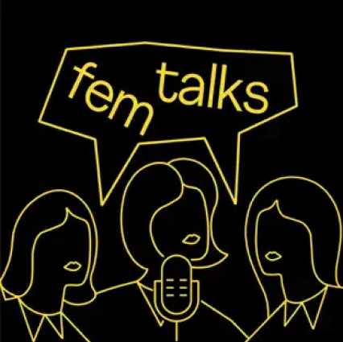

Fem Talks
Лана Узарашвили, Катерина Денисова, Настя Красильникова
Подкаст создательниц одноимённого образовательного проекта Fem Talks.
Лана Узарашвили, Катерина Денисова и Настя Красиль-никова говорят о том, как феминизм существует в нашей действительности — в стендапе, экологии, политике, сексе, образовании, да в целом везде. В каждом выпуске есть приглашённые гости, вместе с которыми ведущие разбираются в непростых вопросах и понятиях,а ещё приводят данные научных исследований.